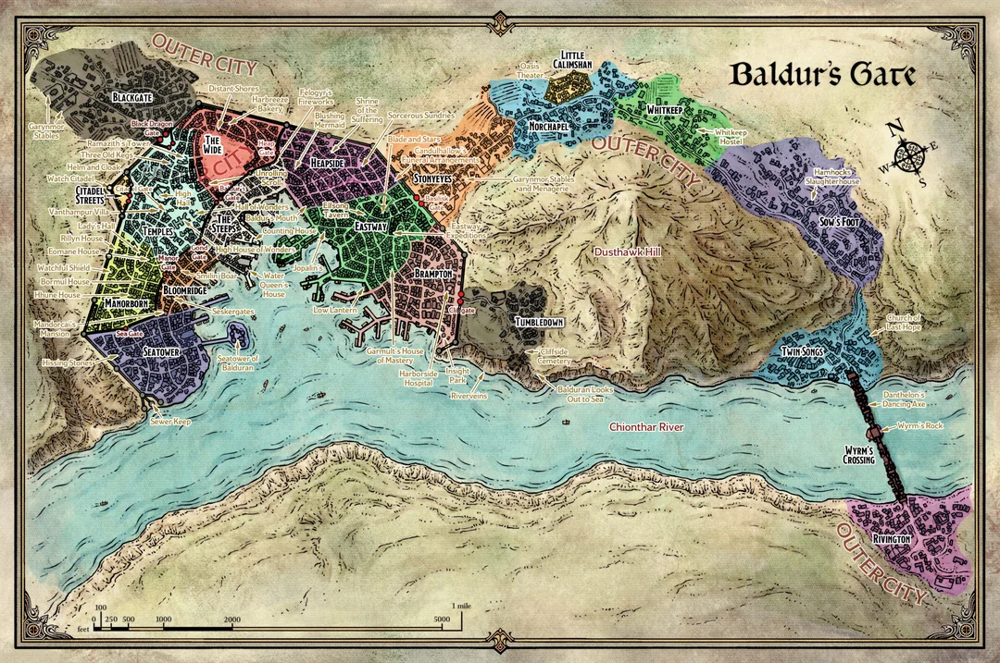

지역을 클릭하면 해당 지명사전으로 이동합니다

시타델 거리 (Citadel Streets) 마노르본 (Manorborn) 신전 구역 (Temples) 더 와이드 (The Wide) 스팁스 (The Steeps) 이스트웨이 (Eastway) 하이드 항 (Heapside) 브램프턴 (Brampton) 블룸리지 (Bloomridge) 더스트호크 언덕 (Dusthawk Hill) 시타워 (Seatower) 블랙게이트 (Blackgate) 스토니아이즈 (Stonyeyes) 리틀 칼림샨 (Little Calimshan) 휘트킵 (Whitkeep) 노르채플 (Norchapel) 트윈 송즈 (Twin Songs) 리빙턴 (Rivington) 텀블다운 (Tumbledown) 웜즈 횡단 (Wyrm's Crossing)